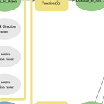

Overview
A geoprocessing model to identify the optimal routes to connect the core habitat for cougars near Los Angeles, California. The model also suggests routes for potential wildlife corridors. The images below show ArcGIS ModelBuilder model and the maps generated from the model.
Model Builder
Least cost analysis model built using ModelBuilder.

Study Area

Elevation

Ruggedness

Ruggedness Cost Surface

Roads

Distance to Roads

Distance to Roads Cost Surface

Landcover

Landcover Cost Surface

Protected Status

Protected Status Cost Surface

Combined Cost Surface

Core Mountain Lion Habitat

Mountain Lion Paths

Mountain Lion Paths including Neighbors

Proposed Wildlife Corridors

Highways

Potential Wildlife Crossings